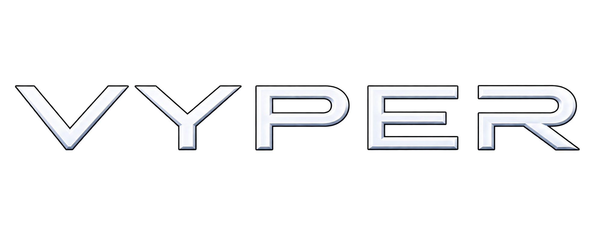

Bearing-friction baseline
Bearing friction alone slows the target. We need magnet-off baseline runs before we can attribute any slowdown to the magnet.

ENGINEERING
Arago V2 design, simulation results and the ground tests planned to validate them.
Design & findingsStatus: Design and simulation. Hardware not yet built.
ARAGO V2
A five-axis arm positions a rotating magnet near a gimballed aluminum target. Simulation has surfaced three open problems.
Bearing friction alone slows the target. We need magnet-off baseline runs before we can attribute any slowdown to the magnet.
The moving ring and yoke restrict access. Some simulated tumbles leave no usable approach; several runs report geometric overlaps despite the magnet head staying clear.
Two-camera fusion, occlusion handling and the hardware drive interface remain development work.
About these notes. Our v2 design report (Detumbler arm v2: design, loads and simulation report) contains several claims we’ve since revised. Corrections and open issues are below. Everything here comes from CAD and simulation; nothing has been tested on hardware.
Stability times don’t yet show magnetic braking. Selected 180-second MuJoCo runs reach our stability threshold after about 20–39 seconds. “Stable” means an estimated angular rate below 1 degree per second for more than 2 seconds, not zero motion. With the magnet off, bearing friction alone stops the target in about 60 seconds, so these runs don’t isolate the magnet’s contribution, and subtracting stop times isn’t enough. We need matched baseline runs and physical measurements.
Correction: overlaps aren’t impacts, and not all were with the stand. The counts of 18, 1,332 and 165 are geometric safety-overlap samples; collision response is disabled on the target hull, ring and yoke. The report said every overlap was with the stand. That was wrong: in case A_roll40_s12 we recorded 1,081 gimbal overlap samples and 251 arm-link/hull overlap samples. Only the magnet head stayed clear of the hull, and a clear head alone doesn’t make the arm trajectory safe.
CAD checking is preliminary. Our static checker counts any fastener-to-part overlap as thread engagement, including overlaps that need separate review, so its zero-interference result doesn’t certify clearance, fit or manufacturability. HJ2 actuator bolt patterns and cable exits still need to be checked against vendor drawings before fabrication.
Correction: magnet mass. The selected magnet’s catalog mass is 574.1 g, but the CAD models two 245.81 g halves (491.62 g). Rotor, head and moving-mass totals, inertias and load margins need to be recalculated, and CAD estimates still need to be checked against the measured assembly.
Materials need measurement. We chose materials to reduce parasitic magnetic interaction, but titanium, carbon composites, stainless pins and brass ballast aren’t all electrical insulators, so the report’s claim that the field only brakes the hull isn’t established. We’ll measure coupling in the assembled head and stand.
Model limits. Rotor reaction torque is disabled in our simulation. The electromagnetic approximation hasn’t been validated against a finite-element field solution or calibrated with measurements, and some coefficients are assumed. The replay shows a software run, not validated hardware dynamics.
Integration is still open. Two-camera fusion and gimbal-ring occlusion handling are unfinished. Our hardware interface covers serial and simulation paths; the EtherCAT adapter still needs to be built and tested. The gimbal’s geometry and balance also limit what the rig can tell us about free-flight motion.
HOW IT WORKS
SENSE, POSITION & BRAKE.
01 / SENSE
Two cameras track markers on the target to estimate its spin axis and rate.
Design. Calibrated images and matched features constrain the target’s relative pose. Metric position needs known geometry, scale or an independent depth measurement, and estimating spin means accounting for camera and servicer motion.
v2 status. The rig uses two global-shutter cameras and markers on the target. Two-camera fusion and ring-occlusion handling are still in development, so tracking accuracy hasn’t been measured.
02 / POSITION
The arm places the magnet close to the target without hitting the gimbal ring or yoke.
Design. A controller requests a magnet position and orientation, and inverse kinematics converts it into joint angles within the arm’s reach, joint limits, collision clearance and slew limits.
v2 status. A five-axis CAD arm drives the ground-rig simulation. The moving ring and yoke constrain approach paths, and some mixed-axis tumbles leave no usable approach. We need to review clearance for the whole arm, not just the magnet head.
03 / BRAKE
A rotating magnet induces eddy currents in the aluminum target. Matched to the target’s motion, the resulting torque brakes its spin.
Design. The motor spins a transverse magnetic dipole so its field direction changes. Induced currents interact with that field; the torque depends on geometry, material, frequency and relative motion, and a poorly chosen rotation can add energy instead of removing it.
v2 status. The simulation applies a magnetic torque model alongside modeled bearing friction, so its stop times don’t yet isolate magnetic braking. Baseline decay, balance and parasitic coupling need physical measurement. Spacecraft reaction and thermal effects aren’t modeled.
Confirm actuator drawings, magnet mass, tube fits, wiring clearance and rotor containment. Recalculate loads and inspect fastener engagements.
Build and balance the stand first. Measure free spin decay, gravity bias and repeatability before introducing the magnetic source.
Complete camera fusion and the EtherCAT interface. Test occlusion, retreat paths and whole-arm clearance across the intended gimbal envelope.
Run matched magnet-off, static and rotating-field experiments. Measure torque, temperature and parasitic effects, with uncertainty and repeat runs.
VERSION 1 MODEL
Our first, simplified browser model. For the Arago V2 CAD and recorded simulation, see the prototype viewer.
OPEN V1 MODELOn a small screen, open the full model for more room.
MODEL SCOPEThe model integrates rigid-body angular motion and uses a local-patch phenomenological drag approximation. Its camera estimate is synthetic; the rendered arm is not a full constrained IK solution. Magnetic rotation is visual and does not drive the torque calculation.
Outputs are simulated, not measured. The display does not establish real stopping times, braking efficacy, tracking accuracy or capture safety. Spacecraft reaction, thermal effects and orbital dynamics are not modeled. Detumbling does not remove the target from orbit.
This model is separate from the Arago V2 MuJoCo simulation. View the Arago V2 replay →
REFERENCES
The eddy-current braking approach builds on published work. See the references.
RESEARCH & REFERENCES